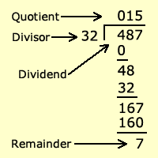

Tools to minimize mental overhead and bookkeeping
dplyrand pipes (%>%)- R Markdown
- Git and GitHub
Common theme: making existing tools more user friendly. Really easy to pick up!!!
Monday, April 13, 2015
Tools to minimize mental overhead and bookkeeping
dplyr and pipes (%>%)Common theme: making existing tools more user friendly. Really easy to pick up!!!
Jenny Bryan's presentation: inspiration for much of this talk
magrittr tutorial: R package for pipes (%>%)
GitHub education discount: 5 private repos for free
Hosting your webpage on GitHub
SQLite tutorial: primer on SQL syntax
dplyrIn the PBC dataset, among the first 312 observations and those with observed times between 1000 and 3000 days, what was the average bilirubin level?
library(survival) head(pbc[, 1:12])
## id time status trt age sex ascites hepato spiders edema bili chol ## 1 1 400 2 1 58.77 f 1 1 1 1.0 14.5 261 ## 2 2 4500 0 1 56.45 f 0 1 1 0.0 1.1 302 ## 3 3 1012 2 1 70.07 m 0 0 0 0.5 1.4 176 ## 4 4 1925 2 1 54.74 f 0 1 1 0.5 1.8 244 ## 5 5 1504 1 2 38.11 f 0 1 1 0.0 3.4 279 ## 6 6 2503 2 2 66.26 f 0 1 0 0.0 0.8 248
dplyrmean(pbc[1:312,][pbc[1:312,]$time>1000 & pbc[1:312,]$time<3000, "bili"])
## [1] 2.528
mean(subset(pbc[1:312, ], time>1000 & time<3000)$bili)
## [1] 2.528
Concise but difficult to read code
dplyrpbc312 <- pbc[1:312, ] pbcsub <- pbc312[pbc312$time>1000 & pbc312$time<3000, ] mean(pbcsub$bili)
## [1] 2.528
Easier to read but clutters workspace with unnecessary variables
dplyrlibrary(dplyr) pbc %>% slice(1:312) %>% filter(time>1000 & time<3000) %>% summarise(mean(bili))
## mean(bili) ## 1 2.528
intuitive functions + piping!
dplyrWhat are the average log(bilirubin) levels for each sex?
pbc %>% slice(1:312) %>% mutate(lbili=log(bili)) %>% group_by(sex) %>% summarise(mean(lbili))
## Source: local data frame [2 x 2] ## ## sex mean(lbili) ## 1 m 0.7736 ## 2 f 0.5499
dplyrCox regression on age and log(bilirubin)
pbc %>% slice(1:312) %>% mutate(status01=(status==2)*1, lbili=log(bili)) %>% coxph(Surv(time, status01)~age+lbili, data=.)
## Call: ## coxph(formula = Surv(time, status01) ~ age + lbili, data = .) ## ## ## coef exp(coef) se(coef) z p ## age 0.0385 1.04 0.00822 4.68 2.9e-06 ## lbili 1.0763 2.93 0.09180 11.72 0.0e+00 ## ## Likelihood ratio test=155 on 2 df, p=0 n= 312, number of events= 125
dplyrR functions%>%: Ctrl-Shift-M (Windows/Linux), Cmd+Shift+M (Mac)data.frame, data.table, and even SQL databasestbl: wrapper for data.frame for nicer default printingPipes may not seem profound at first glance, but consider the frequent scenario where you (or a collaborator!) revisit months-old code and waste minutes/hours deciphering your code. Pipes make your code much easier for a human to read.
Not convinced? Maybe an hour-long presentation by Hadley Wickham will.
tidyrI won't focus on this here, but if your data is really messy then tidyr will help. Use tidyr to "tidy" your messy data, and then dplyr to ready for analysis.
Example: longitudinal measurements for an individual are in the same row but each observation time should have its own row. tidyr functions can help.
Here is an introduction.
Overly dramatic definition:
R Markdown is a way to avoid terrible things like HTML or LaTeX.
Less dramatic definition:
Sweave except for HTML
I made this presentation using R Markdown. See the source in my GitHub repository. In particular ToolsPresentation.Rmd
.Rmd code for slide 4 (this is what you see and touch):
.md code for slide 4 (intermediate file that is auto-generated from the .Rmd file):
.html code for slide 4 (what the web browser sees; auto-generated from the .md file):
This is what your audience members see (web browser turns .html into human readable format):
I still think it's important to learn HTML and LaTeX, in the same way I think it's important to learn how to do long division and integrate by parts using a pencil and paper.

When I click "Knit HTML" in RStudio, it's just running render() from the rmarkdown package.
Takes my R Markdown (.Rmd) file, converts to a Markdown (.md) file, and finally to an HTML file (.html). All three of these files are in my repository for reference. In practice, the only file you need to touch is the .Rmd file.
Backend: render() in turn uses knitr (R package by Yihui Xie) and pandoc ("swiss-army knife" document format converter)
Web browsers convert HTML code to the websites you see. So to make websites, people used to code directly in HTML.
John Gruber got tired of the cumbersome "markups" needed even for simple HTML documents, so created Markdown, a language that simplifies frequently used HTML commands.
Example: to italicize text, type *italics* instead of <em>italics</em>)
John Gruber is not a statistician though. Luckily, the RStudio people are, so they created R Markdown, which allows you to embed R code in Markdown files, similar to how Sweave allows you to embed R code in LaTeX files.
Developed by Linus Torvalds (creator of Linux) in 2005
Open source version control


Alternatives: GitLab, Bitbucket (but GitHub is the dominant product)
Options for using:
GitHub repositories are public. Can pay money for private repos (though educational discount gives you 5 free private repos).
GitHub can render markdown files into html for you.
Host class or personal webpages (GitHub uses Jekyll).
Simple tutorial for using GitHub to host your website.